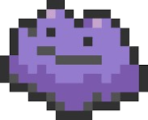

ITM student at SeoulTech, interested in backend and data analysis

My Projects
CUP (Café Union Platform)
Designed and pitched a hyper-local B2B mobile platform for café owners to trade
surplus and shortage inventory in real time. The idea was inspired by firsthand
pain points experienced while working part-time at cafés.
Submitted a service idea to the IT Service Planning and Development Competition.
Figma
Process Mining
Analyzed a real bank's loan application process using the Disco process mining tool
as part of a Business Process Management course team project. Identified critical
bottlenecks, rework loops, and inefficiencies across 20,000+ cases.
Disco
Hero Maze Game
A turn-based RPG dungeon escape game built in Java as a team
project. Players navigate a 4-room maze, defeat monsters, collect a key, and
escape through doors. Room layouts and game state are managed via CSV files.
Java
Minimanimo Java Mini Game Collection
A Java based mini-game collection developed collaboratively by a team of 4
using GitHub Flow. Features 4 games: Cham-Cham-Cham, Rock-Paper-Scissors,
Number Baseball, and Number Up-Down Game.
Java
GitHub
Caffeine and Sleep Quality — Hypothesis Testing
A statistics course project analyzing the relationship between caffeine
intake and sleep quality from a survey. Tested three hypotheses
using t-test, linear regression, and chi-square independence test.
Found that caffeine sensitivity significantly predicts sleep quality,
while intake amount and consumption timing showed
no statistically significant effect.